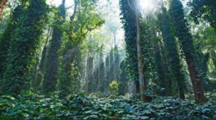
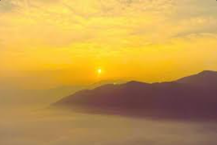
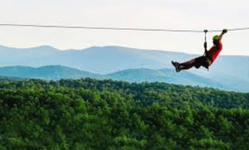

The sunrise in Araku Valley is one of the most beautiful natural scenes in South India. Early in the morning, the sun slowly rises above the Eastern Ghats hills, lighting up the misty valleys with golden colors.

Zip lining in Araku is a popular adventure activity where you glide along a strong steel cable from one hill or platform to another while enjoying beautiful valley views. It combines thrill, speed, and scenic nature.